The courts in another light
To review · 2026-10-25 · thr_wrz2sknwdm
Each court has two lights. The first keeps its familiar sky; the second brings dusk, moonrise, noon or blue hour. These are the opening views, each followed by its grey study. The match seed chooses the light unless a link names one.
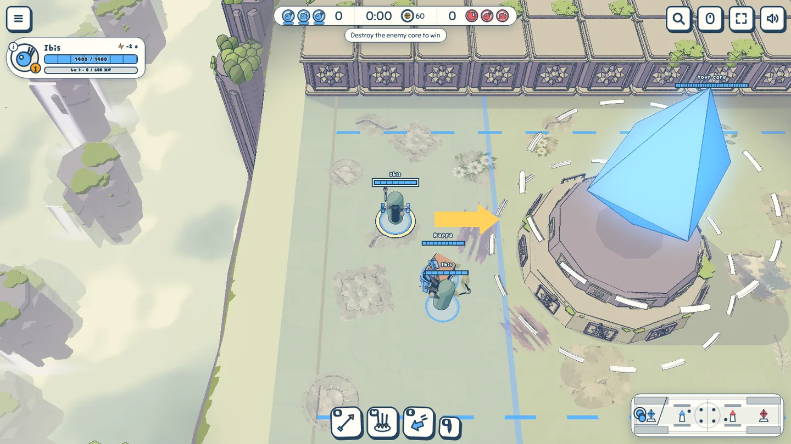
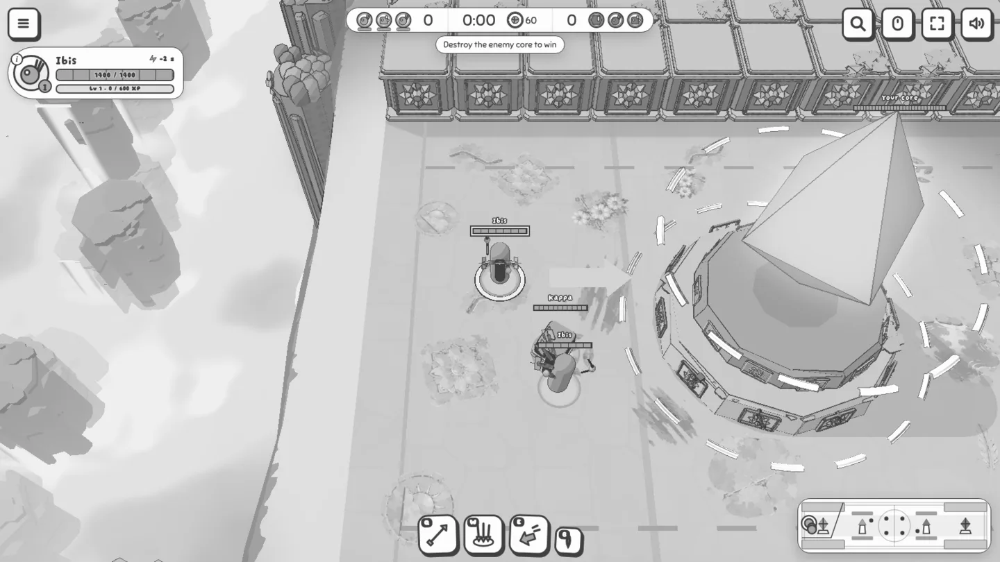
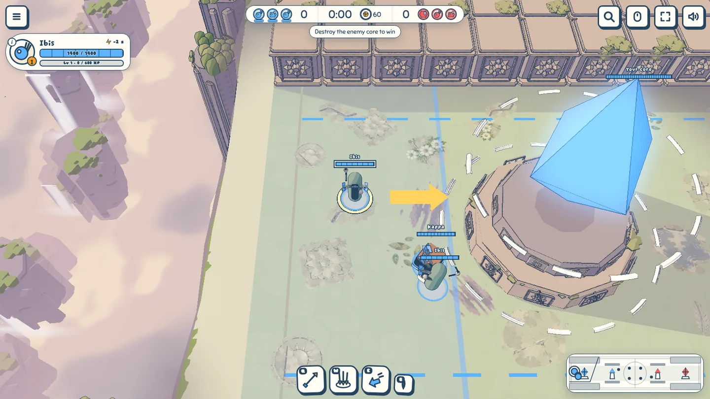
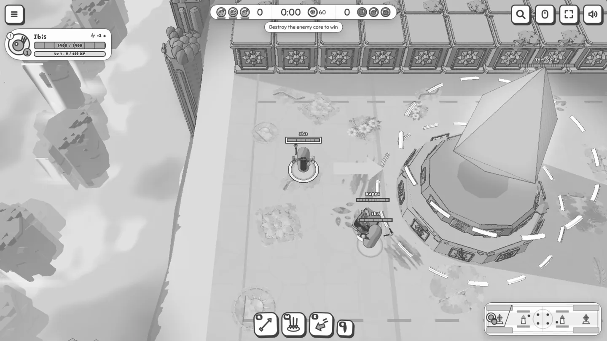
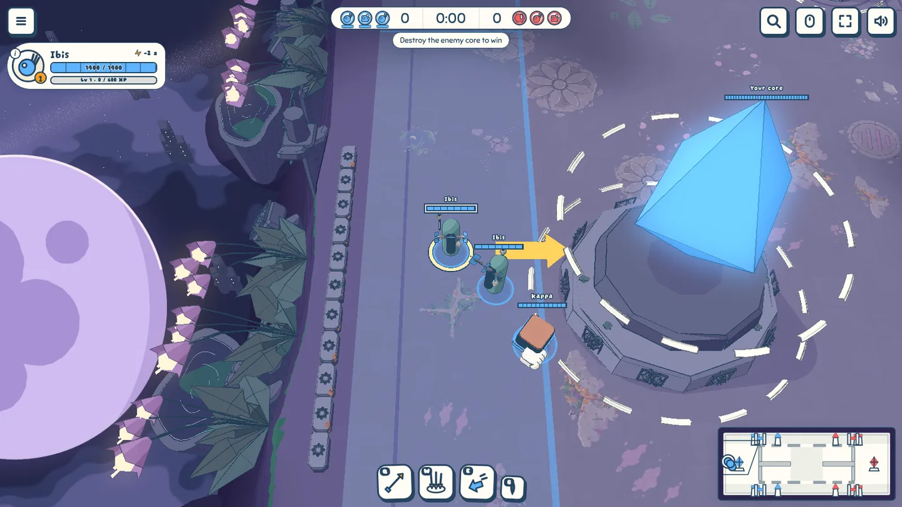
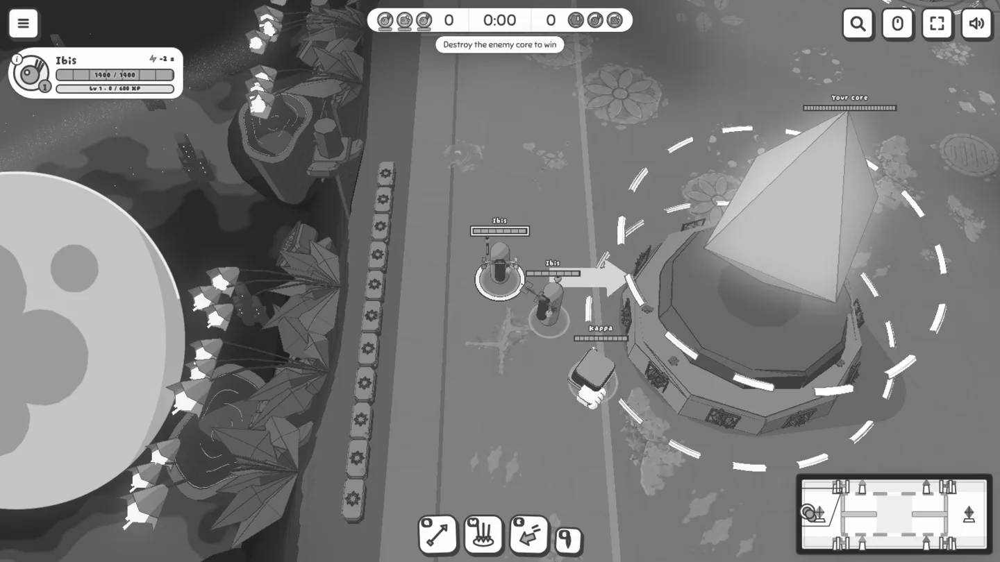
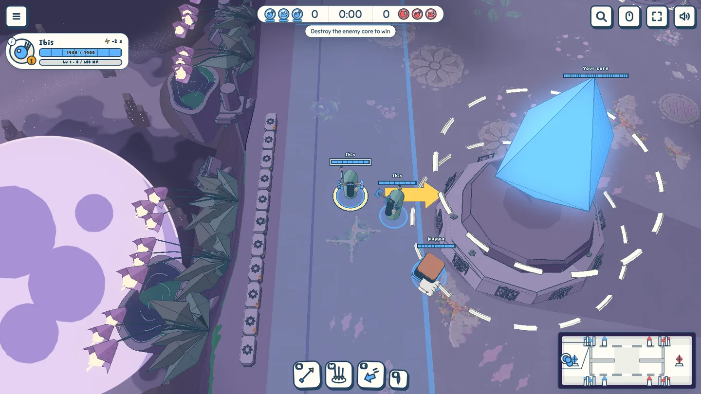
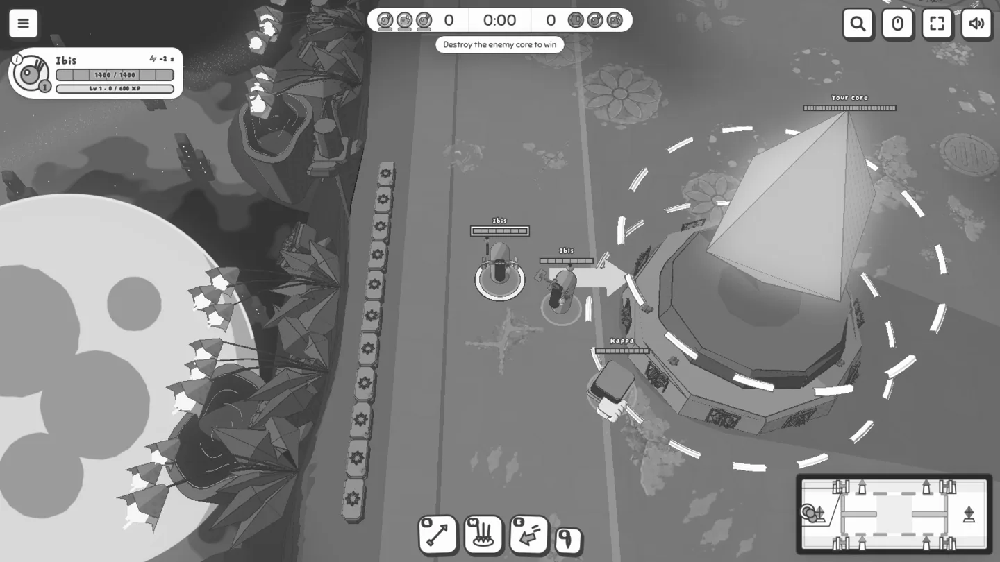
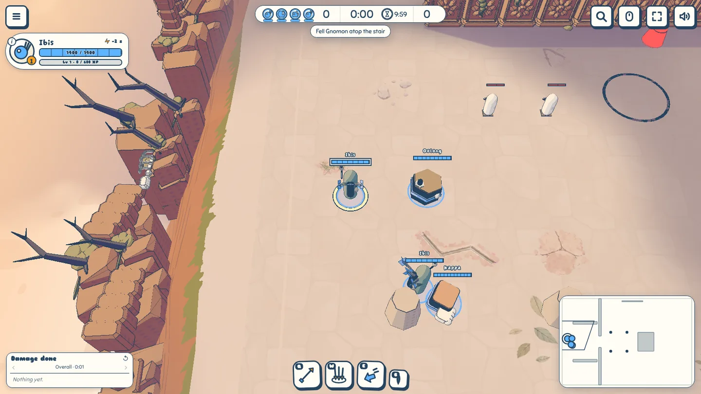
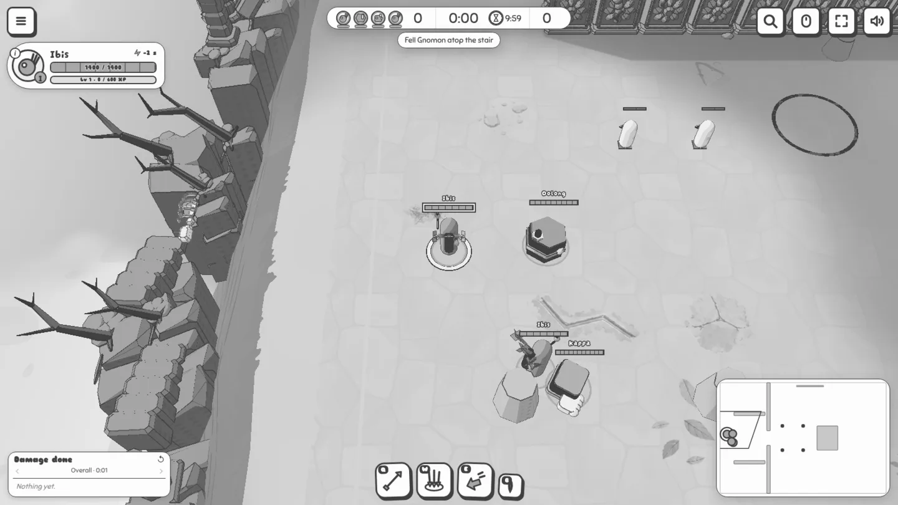
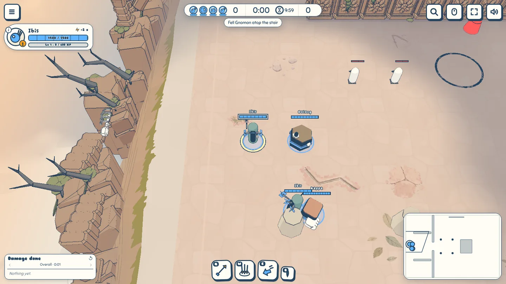
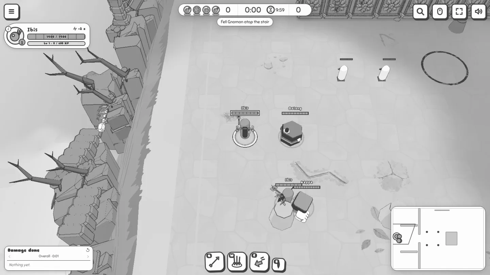
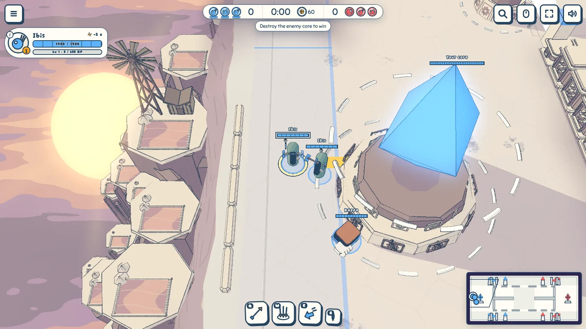
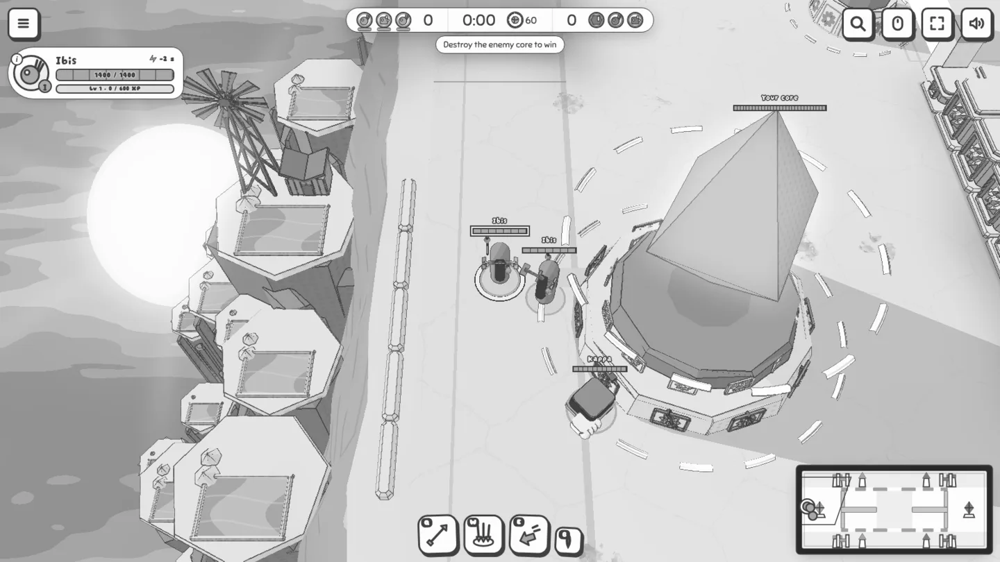
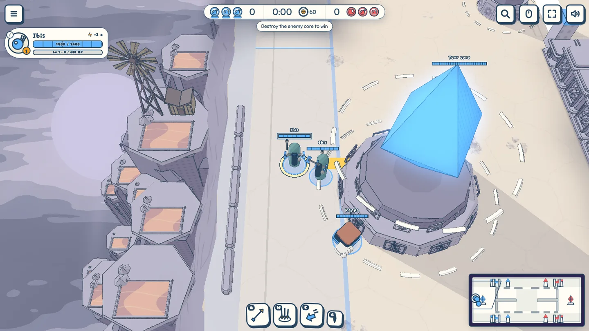
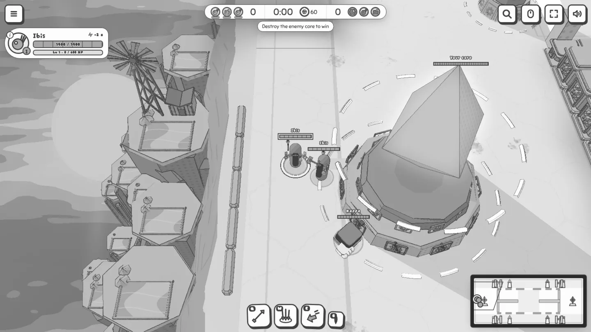
http://office-linux.heron-mermaid.ts.net:5173/?mode=moba&play&map=overthrow&light=dusk&seed=2